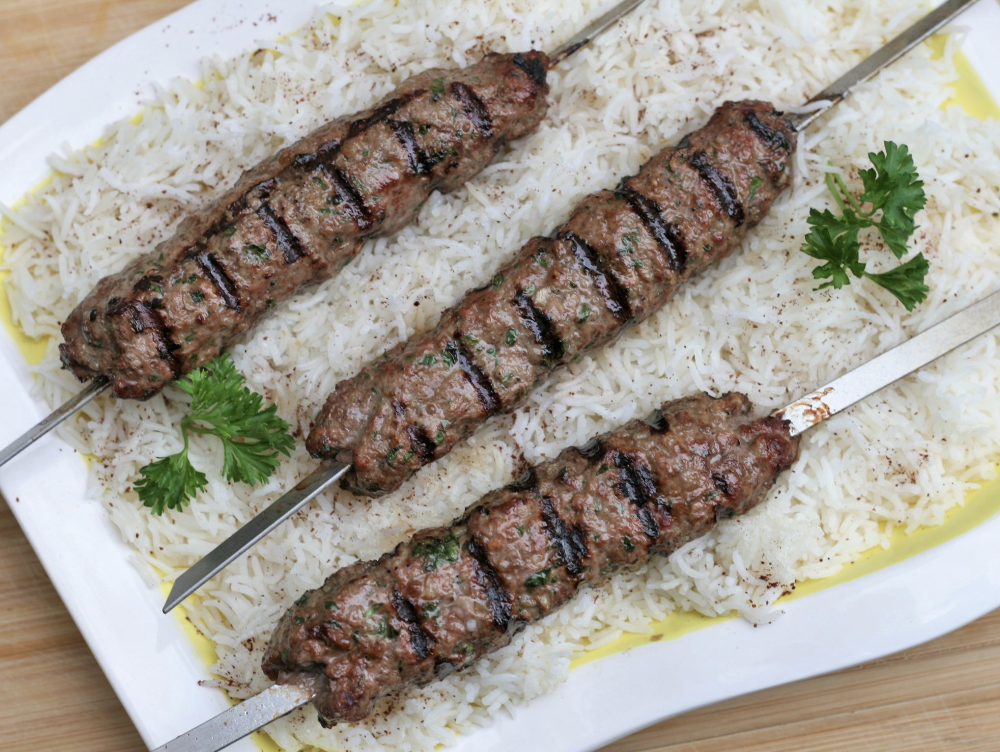

Kafta (BBQ)

Yummy kafta
The yummiest preparation mixture for ground beef EVER! I have made this Lebanese meat for all of my friends and family and have had to leave the recipe with everyone! Meat mixture can be used for everything... meatballs, meatloaf, bbq skewers, hamburgers.
Ingredients
- 1 1/2 pounds lean ground beef
- 1 medium onion, grated
- 1/2 cup finely chopped fresh parsley
- 1/4 teaspoon cayenne pepper
- 1/4 teaspoon ground allspice
- 1 teaspoon salt, or to taste
- 1/4 teaspoon black pepper
- 6 wooden or metal skewers
Steps
- Preheat an outdoor grill for high heat. If using wooden skewers, soak in water.
- In a large bowl, mix together the ground beef, onion, parsley, cayenne, allspice, salt and pepper until evenly blended. Divide into 6 portions, and press around one end of the skewers to form a log shape approximately 1 inch thick and 6 inches long.
- Grill for 10 to 15 minutes, turning occasionally, until meat is no longer pink.